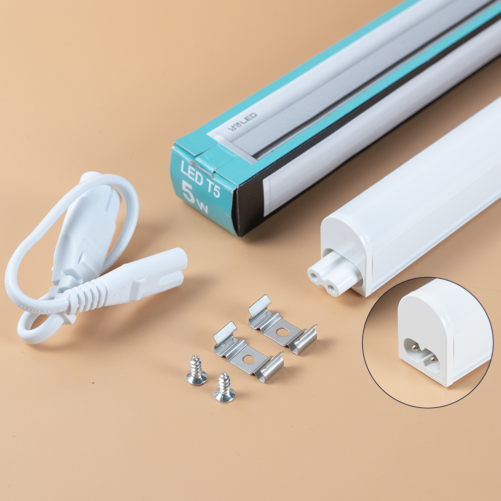
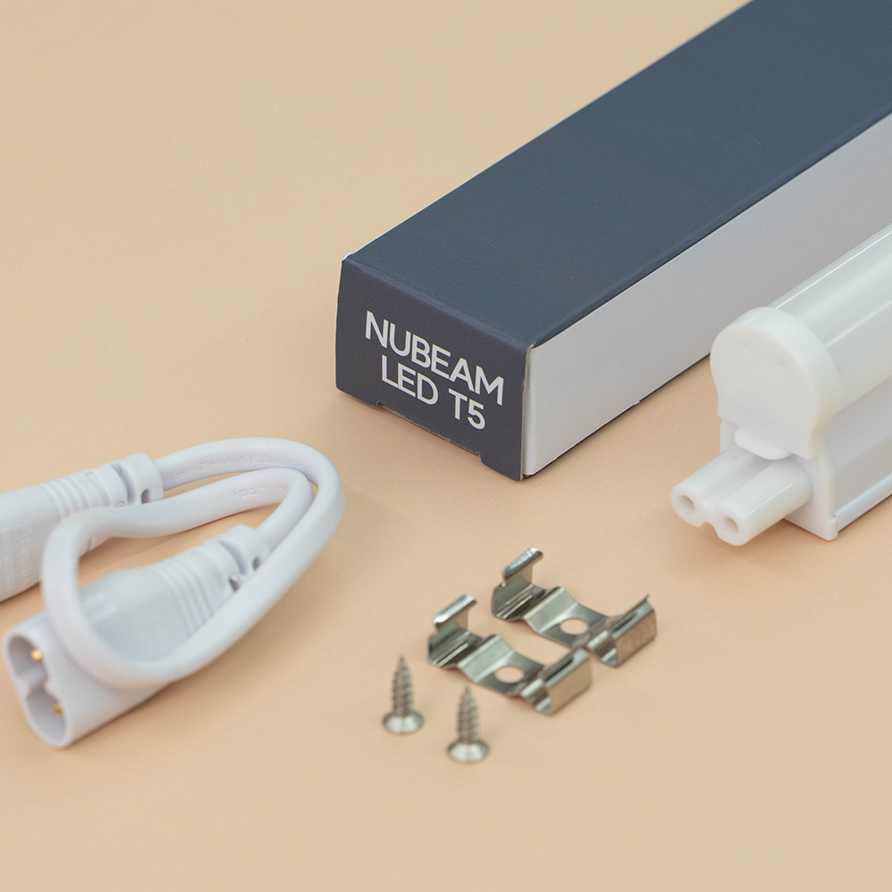

셀프 인테리어에서 가장 사랑받는 아이템, T5 간접조명에 대해 알아봅니다. 별도의 안정기 없이 220V 전원에 바로 꽂아 쓸 수 있는 편리함 덕분에 초보자도 쉽게 도전할 수 있습니다.
T5는 원래 형광등의 규격(직경 5/8인치)을 의미했으나, 현재는 그 규격을 LED로 대체한 '일체형 바 조명'을 통칭합니다. 등기구 자체에 AC 컨버터가 내장되어 있어 거추장스러운 SMPS(전원장치) 없이 콘센트나 전선에 바로 연결하면 불이 들어옵니다.
폴라베어 계산기에서 선택할 수 있는 두 가지 대표 모델의 차이는 '연결 부위의 빛 끊김' 여부입니다.

가성비가 매우 뛰어납니다. 다만 구조적으로 조명 양 끝에 전원 단자가 있어, 여러 개를 이어 붙였을 때 연결 부위에 약 3~5cm 정도의 어두운 구간(음영)이 발생합니다. 커튼박스처럼 깊은 곳에 설치할 때는 크게 눈에 띄지 않습니다.

'Seamless(심리스)'라고도 불립니다. 발광면이 제품 끝까지 꽉 차 있어, 여러 개를 연결해도 빛이 끊기지 않고 하나의 긴 라인처럼 보입니다. 우물천장이나 오픈된 선반처럼 조명이 직접적으로 보이거나 빛의 연속성이 중요한 곳에 추천합니다.
T5는 편리하게 잭(Jack)으로 서로를 연결할 수 있지만, 무한정 연결할 수는 없습니다. 하나의 전원선에 너무 많은 T5를 연결하면 허용 전류를 초과하여 과열되거나 차단기가 내려갈 수 있습니다.